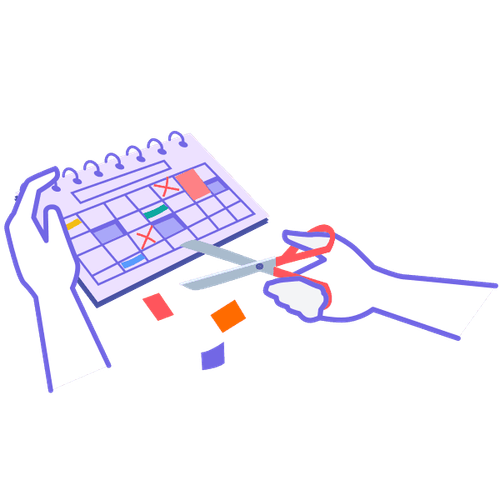

Business
5+ seats
Access for multiple team members within a tailored plan
We believe that teams that want to change how they work together should almost always start with their meetings.

On this page, you’ll learn how 9 Spaces helps teams find meeting structures that truly fit their needs.

Organisations already rethinking meetings and change with 9 Spaces:
Estimates suggest that leaders spend over 20 hours a week in meetings on average – not including preparation and follow-up. At the same time, leaders rate only 17% of their meetings as productive and worthwhile. That means they spend around 900 hours per year – more than 20 full 40-hour work weeks – in meetings that could be run more efficiently.
Crazy, right?
Meetings are expensive. And bad meetings are twice as expensive. US organisational psychologist Steven Rogelberg, who researches this topic at the University of North Carolina, found that ineffective meetings reduce job satisfaction, tire people out, and cause what’s known as “meeting recovery syndrome”. This describes the effect that people need time to regroup and release frustration after an unproductive or frustrating meeting.

On 9 Spaces you'll find interactive whiteboards, proven methods, facilitator guides and tutorials for smart processes, agile teams and successful transformation.

Many of Lufthansa Technik’s 4,500 employees were stuck in workdays shaped by endless meetings. With support from 9 Spaces, an internal facilitator community gradually built a more conscious and effective meeting culture.
✅ There’s a facilitator guiding the meeting — ideally not the boss.
✅ Someone lovely captures the key points and shares the notes afterwards.
✅ Everyone in the room knows why the meeting exists. It has a clear purpose.
✅ Only people who are genuinely needed are present.
✅ The meeting starts with a check-in where participants share how they’re doing and what’s on their mind.
✅ Clarifying questions are welcome at any time.
✅ No one is scrolling on their phone or reading emails on the side. Full attention on the meeting!
✅ Everyone gets a chance to speak. No one is interrupted.
✅ The meeting ends with a check-out where participants reflect on how the meeting felt and what they’d like next time.
✅ People are happy to take on to-dos and leave the meeting with clear next steps.
✅ Everyone leaves the meeting with more energy and clarity than before. (Yes, it’s possible!)
Access for multiple team members within a tailored plan
All features and benefits at a glance?